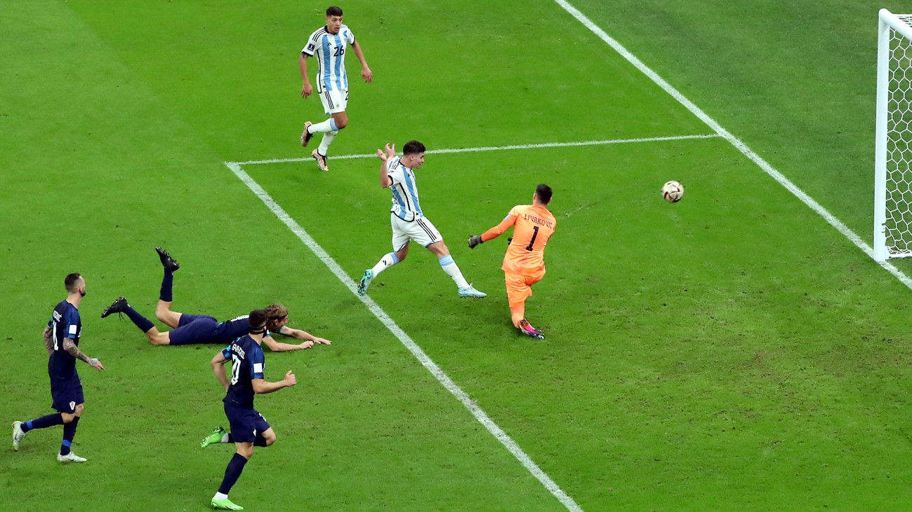

Con doblete de Julian, Argentina a la Final!!
Con un Julián Álvarez imparable y haciendo un doblete (el primero una corrida como la de Diego a los Ingleses en el '86, y el segundo una jugada magistral de Messi a la cual Julián solo tuvo que tocarla.) Argentina eliminó a Croacia y pasó a la final del mundial...